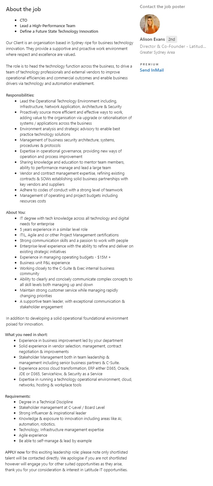
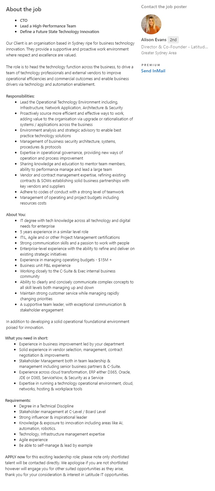

Ideal Job
My ideal job is to become CTO (Chief Technology officer) of a medium to large organisation. I've been working to wards this for quite some time and this would be my ideal goal to achieve.
This is a role I will need to work up to, first becoming head of technology and then stepping into the CTO role when it becomes available.
An example of the role is located here on Linked In
The advertisement is also here :

Description of the position
I like this role as its a very senior role leading a lot of people in an organisation. I have spent many years working for many CTO's, some of which have been amazing, others not so. I feel like I have all the skills and persona to fulfill a role like this and I love helping to shape an organisation in a technical pathway. The role, as I see it, is to oversee all of the Technology decisions and govern the pathway for an organisation using all of the technical resources in its arsenal. People leadership is also a large part of the role, in which I have always enjoyed managing people and helping to improve people's professional portfolios.
Description of the qualifications and experience
For this role I will need to definitely complete my IT degree. I also need some experience in a similar role, I don't think that working as a CTO is required, rather, a senior role similar to it would do (such as head of technology). I need a barrage of other technical experience in the IT field, managing large programs, managing people and managing budgets. In addition to this, communication skills and dealing with vendors/clients.
Description of the qualifications I already have
I have a vast experience in working on large programs, up to aud $300M programs of work, and managing large teams of up to 20 resources. I have good budgeting and forecasting skills and plenty of solid technical experience that I have gained throughout the years. I have excellent people management skills and have excellent communication and interpersonal skills.
Description of the qualifications I need
I currently need to step into a head of technology role that will provide me with the stepping stone to lead much larger teams and have a lot more seniority. I am currently 2-3 years away from this position and an additional 2-3 years from CTO. In addition to this, I will need to complete my Degree as no CTO role is available without an IT degree. Other than these two qualifications, all of the CTO roles advertised have skills that I have already obtained in my career.
Plan on how to reach these goals
The plan I have consists of the following
An example of the role is located here on Linked In
The advertisement is also here :

Description of the position
I like this role as its a very senior role leading a lot of people in an organisation. I have spent many years working for many CTO's, some of which have been amazing, others not so. I feel like I have all the skills and persona to fulfill a role like this and I love helping to shape an organisation in a technical pathway. The role, as I see it, is to oversee all of the Technology decisions and govern the pathway for an organisation using all of the technical resources in its arsenal. People leadership is also a large part of the role, in which I have always enjoyed managing people and helping to improve people's professional portfolios.
Description of the qualifications and experience
For this role I will need to definitely complete my IT degree. I also need some experience in a similar role, I don't think that working as a CTO is required, rather, a senior role similar to it would do (such as head of technology). I need a barrage of other technical experience in the IT field, managing large programs, managing people and managing budgets. In addition to this, communication skills and dealing with vendors/clients.
Description of the qualifications I already have
I have a vast experience in working on large programs, up to aud $300M programs of work, and managing large teams of up to 20 resources. I have good budgeting and forecasting skills and plenty of solid technical experience that I have gained throughout the years. I have excellent people management skills and have excellent communication and interpersonal skills.
Description of the qualifications I need
I currently need to step into a head of technology role that will provide me with the stepping stone to lead much larger teams and have a lot more seniority. I am currently 2-3 years away from this position and an additional 2-3 years from CTO. In addition to this, I will need to complete my Degree as no CTO role is available without an IT degree. Other than these two qualifications, all of the CTO roles advertised have skills that I have already obtained in my career.
Plan on how to reach these goals
The plan I have consists of the following
- Move to a "Head Of" role. This role is something I am looking for at the moment, and will most likely be able to find something suitable in a large organisation soon. Once I find this role, I will spend approx 2-3 years in this role honing my skills, reporting directly to the CTO.
- Finish my IT degree. This will most likely occur in the next 2 years, which would be in line of when I am ready to step into a CTO role from my Head Of role.
- Manage large teams, this is something I am already doing, but would like to manage much larger teams